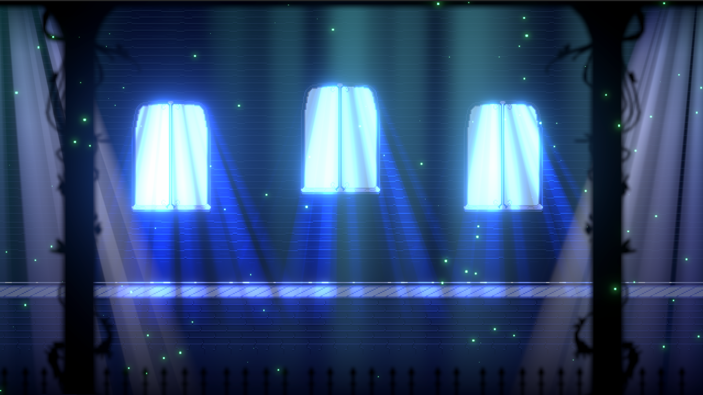
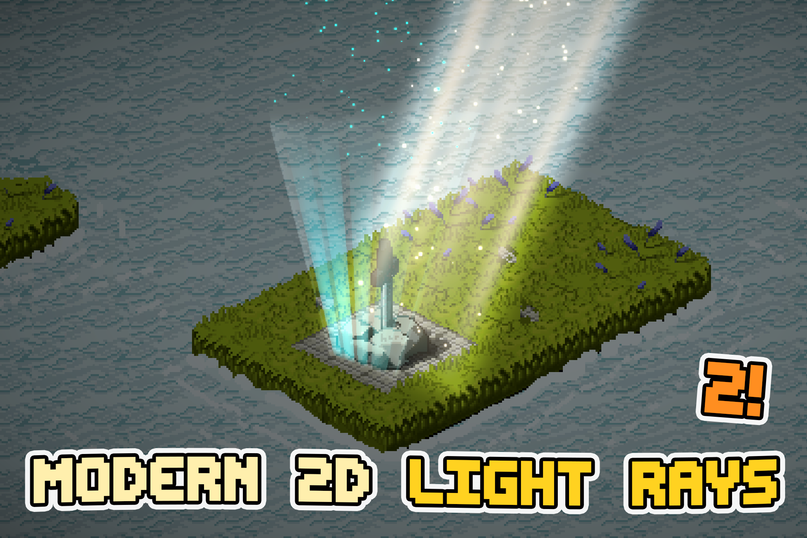

Overview
Create polished animated 2D light rays, god rays and atmospheric beams directly in the Unity Inspector.
Fast authoring
Create a ray, choose a look, shape it in Scene View and adjust only the controls that matter.
Flexible shapes
Use a manual quad, SpriteRenderer silhouette or Collider2D polygon as the emitter.
2D lighting integration
Optionally create a matching URP Freeform Light2D and sync its appearance.
Atmosphere
Add smooth dust motes or use the original directional particle modes.
What the asset is for
Modern 2D LightRays is an authoring tool for animated god rays, window beams, soft shafts, dark stylized rays, pixel-art lighting and atmospheric effects in URP 2D scenes. The main workflow stays component-first: add Light Rays 2D, shape it, choose a visual style, then optionally add Light2D and particles.


Core features
| Feature | Use it for |
|---|---|
| Quick Looks | Apply ready-made ray, gradient and motion styles without changing your authored shape. |
| Blend Modes | Bright, dark, inverted and stylized lighting treatments. |
| Pixel Art | Stable quantized rays with controlled resolution, opacity levels and animation rate. |
| Emitter Shapes | Manual Scene View editing, SpriteRenderer silhouettes and Collider2D shapes. |
| Particles & Dust | Soft dust motes or the original Surface, Surface Climbing, Top Falling and Bottom Climbing modes. |
| Light2D | Create a matching Freeform Light2D on the same perimeter. |
| Groups | Control related rays by hierarchy. |
| Global Controller | Drive intensity, tint and animation speed across the scene. |
| Runtime API | Change common settings from gameplay, cutscenes or day/night systems. |